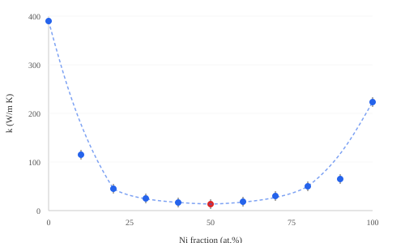

1. Introduction
Binary alloys exhibit thermal conductivity that depends non-linearly on composition. For solid-solution alloys, disorder scattering reduces the mean free path of heat-carrying phonons and electrons, producing a minimum in conductivity near equiatomic composition.
2. Results
Figure 1 shows thermal conductivity as a function of nickel fraction in Cu-Ni alloys. The minimum occurs near 50 at.% Ni, consistent with maximum lattice disorder.

The data follow the Nordheim relation:
1/k = 1/k_0 + C * x(1-x)
where x is the nickel fraction, k_0 is the pure-component conductivity, and C is the Nordheim coefficient.
3. Conclusion
The thermal conductivity minimum at intermediate compositions confirms the dominant role of alloy disorder scattering in Cu-Ni solid solutions.